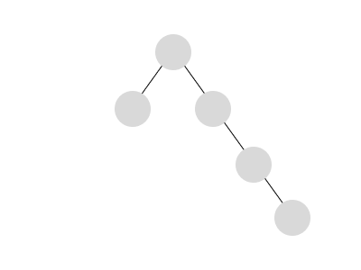

B-Tree
기본 Tree 자료구조는 문제가 있다. Tree가 한쪽으로 치우쳐
성능적인 이점을 얻지 못하는 것이다.
기본 Tree 구조는 노드(데이터)를 탐색하는데 최악의 경우 O(n)의 시간복잡도가
걸린다.

B-Tree는 치우치지 않게 균형(Balance)을 맞추는 Tree
자료구조이다.
B-Tree는 2개이상의 자식노드를 가질 수 있으며, 노드 내 데이터 개수를 1개 이상
가질 수 있다. 이를 이용해 삽입/삭제 마다 노드의 위치를 분리/병합/교환하여
트리의 높이를 균일하게 유지시킨다.
최대로 가질 수 있는 자식 노드의 개수(M)에 따라 M차 B-Tree 라고 한다.
B+Tree
B-Tree는 범위 탐색에 있어 취약하다. 매번 Tree를 따라 하나하나 탐색을 거쳐야
한다.
B+Tree는 모든 데이터 노드를 Leaf(끝단)노드로 위치시키고 이
Leaf 노드들을 LinkedList 형태로 연결시켰다.
B+Tree에서는 범위의 시작이 되는 노드를 찾은 후 LinkedList를 따라서 범위를
쉽게 탐색 할 수 있다.